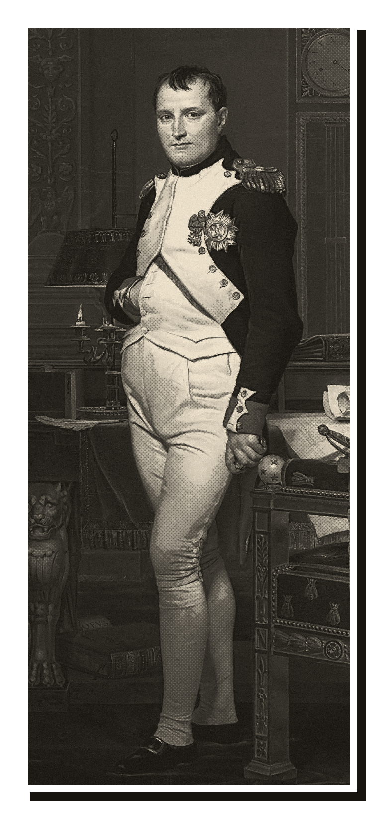
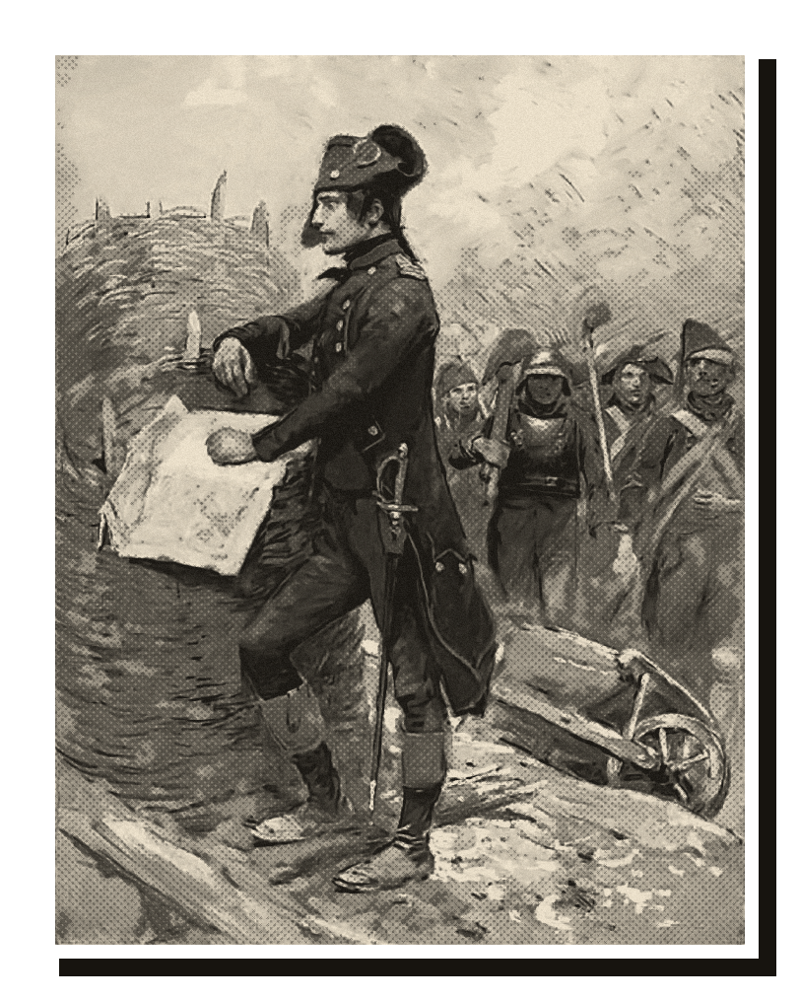
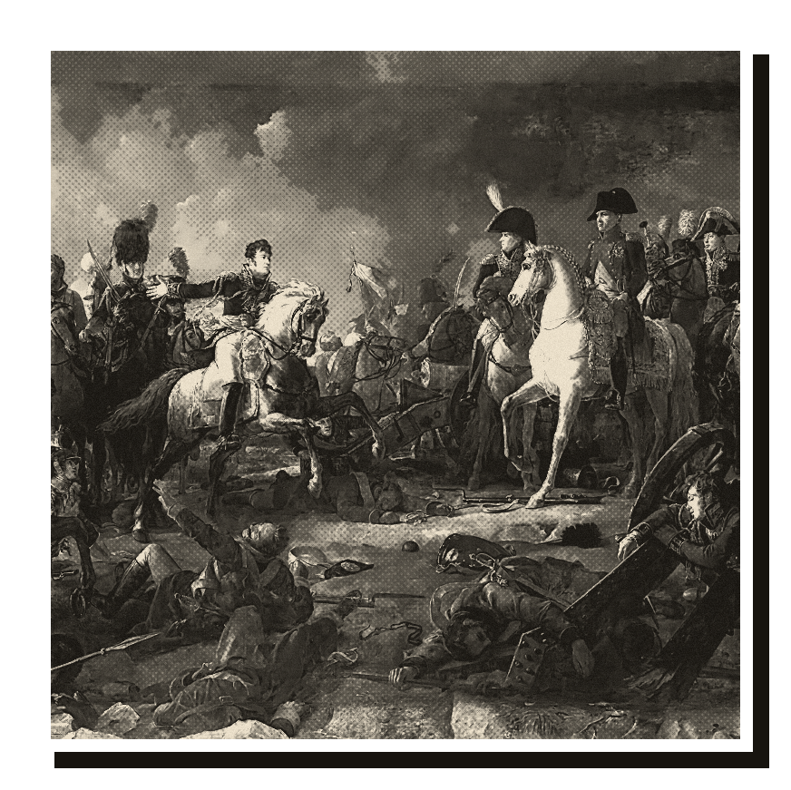
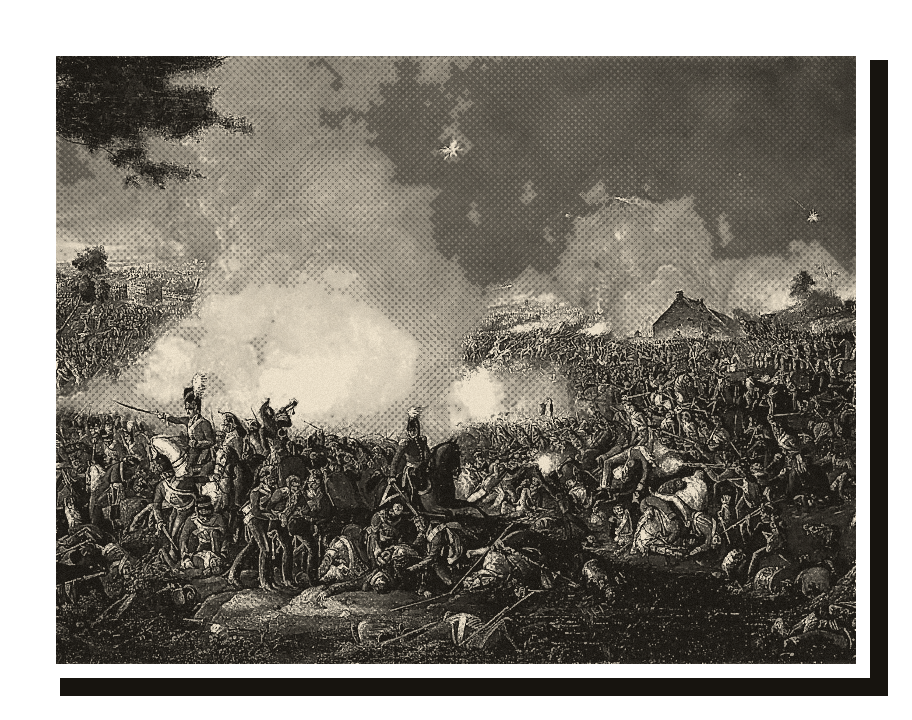
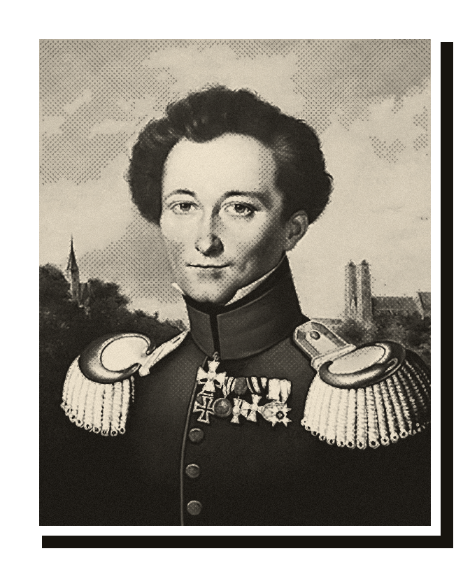

1,69

Retrato: J.-L. David, 1812 · dominio público
TOULON

Batalla 1 · Sitio
Toulon, Francia
Sep–Dic 1793
Sep–Dic 1793
Pintura: É. Detaille · dominio público
Toulon · 1793
VER EL TERRENO
Mapa: A.K. Johnston, 1850 · dominio público
Batalla 2 · Italia
Abril 1796
DIVIDIR
Plano de Montenotte, c. 1800 · dominio público
La gran idea · 1805
RODEAR
Mapa: A.K. Johnston, 1850 · dominio público

Batalla 4 · Austerlitz
2 · 12 · 1805
ENGAÑAR
Pintura: F. Gérard, 1810 · dominio público
ANÁLISIS
1815

Waterloo, Bélgica
18 · 06 · 1815
Pintura: W. Sadler · dominio público
KRIEG

Vom Kriege
DE LA GUERRA · 1832
DIJO
Retrato: W. Wach · dominio público

ANÁLISIS
Foto: M. B. C. / Pexels · Retrato: Gil de Castro
TRAMA
FUENTES EN LA DESCRIPCIÓN